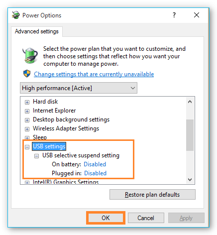

1. Installation
1.1. Installation der Software
Wichtig
Auf dem Steuerungs-PC sollten keine weiteren rechenintensiven Anwendungen ausgeführt werden um zeitkritische Steuerungsvorgänge der Software nicht zu beeinträchtigen.
Wichtig
Installieren Sie die Software + Gerätetreiber bevor Sie Ihr Gerät über USB mit dem PC verbinden.
Achtung
Gefahr von Fehlfunktion / Datenverlust durch Standby- / Ruhemodus. Schalten Sie die Aktivierung des Standby- / Ruhemodus an Ihrem PC oder Notebook aus um eine Fehlfunktion des Hardware Treibers zu vermeiden.
Achtung
Gefahr von Fehlfunktion / Datenverlust durch Energiesparoption. Betreiben Sie Ihren PC oder Notebook stets im Netzbetrieb und deaktivieren Sie das selektive USB-Energiesparen, um eine Fehlfunktion des Hardware Treibers zu vermeiden.
Zur Installation der Software legen Sie die CETONI Elements CD-ROM in ihr CD/DVD Laufwerk oder stecken Sie den CETONI Elements USB-Stick in einen freien USB-Anschluss. Starten Sie anschließend die Datei CETONI_Elements_Setup.exe von der CD / dem USB-Stick. Der Installationsassistent führt Sie anschließend durch die Installation der Software und der Hardware Treiber.
Wichtig
Unter Windows müssen Sie mit Administratorrechten angemeldet sein, um die Installation der Hardware-Treiber durchführen zu können.
Der Installationsassistent wird Sie nun durch die Installation der Software führen.

Während der Installation werden die Hardware Gerätetreiber installiert. Dieser Schritt ist nur notwendig, wenn die Treiber auf Ihrem Rechner noch nicht installiert wurden. Sind die Hardwaretreiber bereits installiert, deaktivieren Sie bitte die Treiber Komponenten (siehe Abbildung unten).

1.2. Minimale Systemanforderungen
Um die Software nutzen zu können, sollte Ihr Rechner die folgenden Systemvoraussetzungen erfüllen:
PC mit Intel Core i3 (oder besser) - min. 1.3 GHz (Die meisten Prozessoren, die 2015 und später produziert wurden, sollten gut mit der Software funktionieren)
mindestens 8 GB Arbeitsspeicher (empfohlen 16 GByte)
freie Festplattenkapazität von ca. 400 MByte
mindestens 2 freie USB (1.1 oder 2.0) Schnittstellen
Betriebssystem Windows 10 / 11 64-Bit (Windows 7 und Windows 8 können funktionieren, werden aber nicht getestet)
Monitor Auflösung: 1920 x 1080 (HD) oder höher
Maus mit Mausrad
Der Standby- oder Ruhemodus in Windows muss beim Betrieb der Software deaktiviert werden, da die Aktivierung des Standby- / Ruhemodus zu Fehlfunktionen des Hardware-Gerätetreibers führen kann.
Achtung
Gefahr von Fehlfunktion / Datenverlust durch Standby- / Ruhemodus. Schalten Sie die Aktivierung des Standby- / Ruhemodus an Ihrem PC oder Notebook aus, um eine Fehlfunktion des Hardware Treibers zu vermeiden.
Deaktivieren Sie bitte in den Energioptionen das selektive Energiesparen für USB-Anschlüsse, um Verbindungsabbrüche zum Gerät zu vermeiden:
Achtung
Gefahr von Fehlfunktion / Datenverlust durch Energiesparoption. Betreiben Sie Ihren PC oder Notebook stets im Netzbetrieb und deaktivieren Sie das selektive USB-Energiesparen, um eine Fehlfunktion des Hardware Treibers zu vermeiden.
1.3. USB Gerätetreiber installieren
Die USB Gerätetreiber werden für die USB Verbindung zu Ihrem Gerät benötigt. Wenn Sie ihr Gerät das erste Mal über USB mit Ihrem PC verbinden, oder das Gerät später an einem anderen USB Steckplatz anschließen, startet automatisch der Hardware-Assistent von Windows, der ein neues USB-Gerät erkennt und die benötigten Treiber dafür installiert, wenn Sie die CETONI Elements Software vorher bereits von CD oder USB-Stick installiert haben.
Wichtig
Je nach verwendeter Windows Version kann der Installationsvorgang der Gerätetreiber leicht variieren.
Achtung
Gefahr von Datenverlust durch unkontrollierte Ausschaltvorgänge! Beenden Sie stets zuerst die Software CETONI Elements, bevor Sie Ihr Gerät ausschalten! Nur dann werden alle Einstellungen korrekt gespeichert, und Konfigurationsdaten gehen nicht verloren.